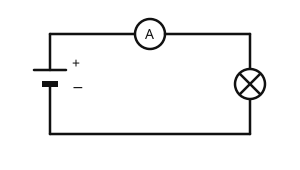
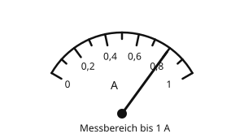
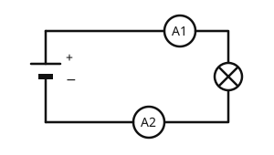

Die Stromstärke messen
Mit einem KI-Tutor lernen
Ein KI-Tutor erklärt dir diese Seite und hilft dir bei den Übungen. Wähl deinen Assistenten:
Mit Claude öffnen Mit ChatGPT öffnen Mit Mistral Vibe öffnen
Du nutzt dein eigenes Konto beim Anbieter. Der Assistent ist kein Angebot von lernapps.net: lernapps liefert nur Inhalte und Übungen. Die Wahl gilt für alle Seiten, nur auf diesem Gerät.
Vom Wert zum Messgerät
Du weißt jetzt, was die Stromstärke bedeutet und wie man sie in Ampere angibt. Nun fehlt noch das Gerät, mit dem man sie misst: das Amperemeter. Du lernst, wo es im Stromkreis sitzt und wie du seine Anzeige abliest.
Danach kannst du die Stromstärke mit einem Amperemeter richtig messen.
Das Amperemeter sitzt im Weg des Stroms
Die Stromstärke sagt, wie viel Strom durch eine Stelle des Kreises fließt. Darum muss der Strom durch das Messgerät hindurch fließen. Du öffnest den Stromkreis an einer Stelle und setzt das Amperemeter genau dort ein, in Reihe mit den anderen Teilen. Im Schaltplan ist das Amperemeter ein Kreis mit einem A.

Das Amperemeter ersetzt ein Stück Kabel. Der Strom fließt durch das Gerät.
Quelle: eigene Zeichnung. Lizenz: CC-BY-4.0.- Amperemeter
Ein Amperemeter ist ein Messgerät für die Stromstärke. Man schaltet es in den Stromkreis ein, sodass der Strom durch das Gerät fließt.
Nicht neben die Lampe!
Ein Amperemeter darf man nicht neben ein Bauteil setzen, sodass ein zweiter Weg an der Lampe vorbei entsteht. Dann nimmt der Strom fast ganz den Weg durch das Gerät, die Lampe bleibt dunkel, und das Gerät kann beschädigt werden.
Ablesen: Auf der Skala siehst du lange Striche mit Zahlen und kurze Striche dazwischen. Zähle, wie viele kurze Striche zwischen zwei Zahlen liegen, und rechne daraus aus, wofür ein kurzer Strich steht. In der Zeichnung gehen die Zahlen von 0 bis 1 A in Schritten von 0,2 A. Dazwischen liegt je ein kurzer Strich: Er steht für 0,1 A.

Das Amperemeter zeigt hier 0,8 A (Beispiel zum Ablesen).
Quelle: eigene Zeichnung. Lizenz: CC-BY-4.0.Beispiel: Strom vor und hinter der Lampe
Wird Strom in der Lampe verbraucht?
Viele glauben, hinter der Lampe sei weniger Strom als davor. Du kannst das mit zwei Amperemetern prüfen. A1 sitzt vor der Lampe, A2 dahinter:

A1 misst vor der Lampe, A2 hinter der Lampe.
Quelle: eigene Zeichnung. Lizenz: CC-BY-4.0.| Messstelle | Stromstärke |
|---|---|
| A1 (vor der Lampe) | 0,25 A |
| A2 (hinter der Lampe) | 0,25 A |
- Lies beide Werte ab: Beide Geräte zeigen 0,25 A.
- Vergleiche: Vor und hinter der Lampe ist die Stromstärke gleich.
- Daraus folgt: Die Lampe verbraucht den Strom nicht. Der ganze Strom fließt durch sie hindurch und weiter im Kreis.
Übung
Übung
Lösung
Anschluss A richtige Antwort
Das Amperemeter sitzt im Weg des Stroms. Der ganze Strom fließt durch das Gerät und durch die Lampe.
Anschluss B
Das Amperemeter liegt neben der Lampe. Der Strom nimmt fast ganz den Weg durch das Gerät, die Lampe bleibt dunkel, und das Gerät kann Schaden nehmen.
Ein Amperemeter muss im Weg des Stroms liegen, damit der Strom durch das Gerät fließt.
Mehr dazu:
Übung
Lösung
Richtige Antwort: 0,3 A (erlaubte Abweichung: 0,02 A)
Der Zeiger steht auf dem kurzen Strich zwischen 0,2 und 0,4. Der kurze Strich steht für 0,1 A mehr als 0,2 A, also 0,3 A.
Mehr dazu:
Übung
Lösung
Richtige Antwort: Die Aussage stimmt.
Das Amperemeter muss im Weg des Stroms liegen. Dafür trennt man den Kreis an einer Stelle auf und setzt das Gerät ein.
Mehr dazu:
Übung
Lösung
Richtige Antwort: Die Aussage stimmt nicht.
Die Stromstärke ist vor und hinter der Lampe gleich. Der Strom wird nicht verbraucht, er fließt im Kreis weiter.
Mehr dazu: